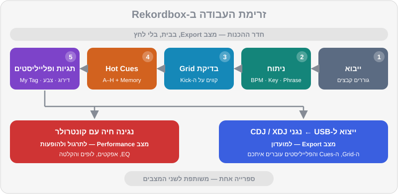

פרק 02 מתוך 20
יסודות Rekordbox
Rekordbox Basics
התקנה, תוכניות ומנויים, ההבדל בין מצב Export למצב Performance, ניתוח טראקים, בדיקה ותיקון של Beatgrid, ספרייה ופלייליסטים, הגדרות מומלצות — וייבוא כל הספרייה של DJ Lab דרך קובץ rekordbox.xml.
ה-Rekordbox הוא הרבה יותר מ"תוכנת DJ". הוא הספרייה שלכם, חדר ההכנות שלכם, הגשר לנגני המועדון, וגם — כשמחברים קונטרולר — הכלי שאיתו מנגנים. רוב ה-DJs המקצועיים מבלים בו יותר זמן בהכנה מאשר בנגינה. בפרק הזה נבנה בסיס יציב: נתקין, נבין את המצבים, נלמד לסמוך (ולא לסמוך) על הניתוח האוטומטי, ונייבא את כל 52 הטראקים של DJ Lab עם Hot Cues מוכנים — כך שמחר בבוקר אתם כבר מתרגלים.
מה תלמדו בפרק#
- איך מתקינים, איזו תוכנית מנוי צריך (אם בכלל), ומה זה Hardware Unlock
- ההבדל בין מצב Export למצב Performance ומתי משתמשים בכל אחד
- איך נראה המסך: דקים, ווייבפורמים, מיקסר ודפדפן הספרייה
- ניתוח טראקים: BPM, Beatgrid, סולם (Key), פרייזים ווקאלים
- איך בודקים ומתקנים Beatgrid — הכישור שמפריד בין מתחילים למקצוענים
- ספרייה, פלייליסטים ותיקיות
- הגדרות מומלצות למתחילים
- ייבוא קובץ
rekordbox.xmlשל DJ Lab, צעד אחר צעד
התקנה ותוכניות#
התקנה#
- הורידו את Rekordbox רק מהאתר הרשמי (
rekordbox.com). גרסאות "פרוצות" מאתרים אחרים הן דרך מצוינת לקבל וירוס ולאבד את הספרייה. - התקינו והפעילו. תתבקשו ליצור חשבון AlphaTheta (או להתחבר לחשבון קיים).
- ב-Windows: אם יש לקונטרולר שלכם דרייבר ייעודי (ASIO), הורידו אותו מאתר היצרן והתקינו לפני שמחברים את הקונטרולר. ב-Mac רוב הקונטרולרים עובדים בלי דרייבר.
- חברו את הקונטרולר. אם הוא תומך ב-Hardware Unlock, Rekordbox יזהה אותו ויפתח את מצב Performance.
התוכניות — בקצרה#
ל-Rekordbox יש תוכנית חינמית ושלוש תוכניות בתשלום. המחירים בדולרים, כי כך הם מתומחרים; הסכומים משוערים (חישוב חודשי בתשלום שנתי) ועשויים להשתנות:
| תוכנית | מחיר משוער | מה מקבלים בעיקר |
|---|---|---|
| Free | חינם | ניהול ספרייה מלא, ייצוא ל-USB, מצב Performance עם המחשב או עם קונטרולר שעושה Hardware Unlock, סנכרון ענן מוגבל למספר קטן של טראקים |
| Core | ~10$ לחודש | שימוש בכל ציוד Pioneer DJ / AlphaTheta תואם בלי צורך ב-Hardware Unlock, ופיצ'רים נוספים |
| Creative | ~15$ לחודש | מעל Core: סנכרון ספרייה מלא בענן (Cloud Library Sync), אפקטים מתקדמים, וידאו ועוד |
| Professional | ~30$ לחודש | הכול, כולל אחסון ענן מורחב והפיצ'רים המתקדמים ביותר |
שני המצבים: Export ו-Performance#
בפינה העליונה של המסך יש בורר מצבים. שני המצבים החשובים הם:
| מצב Export | מצב Performance | |
|---|---|---|
| התפקיד | חדר ההכנות: ניהול ספרייה והכנה לנגני מועדון | הבמה: נגינה ומיקס חי עם קונטרולר |
| מה עושים בו | ייבוא, ניתוח, עריכת Beatgrid, Hot Cues ו-Memory Cues, פלייליסטים, ייצוא ל-USB | מיקס בזמן אמת: EQ, אפקטים, לופים, Sampler, הקלטה |
| צריך קונטרולר? | לא | מומלץ (אפשר גם עם מקלדת ועכבר) |
| מתי | בבית, לפני הופעה על CDJ/XDJ | תרגול והופעות עם קונטרולר |
יש גם מצבים נוספים, כמו Lighting (תאורה) ו-Edit (עריכת טראקים) — לא נזדקק להם בשלב הזה.

אנטומיה של המסך#
ברוב הפריסות תמצאו מלמעלה למטה:
- הדקים — לכל דק יש ווייבפורם מוגדל (הקטע שמתנגן עכשיו; הוא זורם מימין לשמאל, וקו קבוע באמצע מסמן את הרגע הנוכחי) וווייבפורם כללי (Overview) של כל הטראק, עם סימני Cues. ליד: BPM, אחוז Tempo, סולם, זמן שעבר/נשאר, ופדים של Hot Cues.
- המיקסר (במצב Performance) — Trim, EQ, פיידרים, Crossfader ואפקטים, בדומה לקונטרולר.
- הדפדפן — מימין או משמאל ה-Tree View (העץ): Collection, פלייליסטים, היסטוריה, מקורות כמו Explorer, rekordbox xml, שירותי סטרימינג והתקנים (Devices). במרכז — רשימת הטראקים עם עמודות.
ייבוא וניתוח (Analysis)#
ייבוא מוזיקה#
הדרך הפשוטה ביותר: גוררים תיקייה או קבצים מסייר הקבצים (Finder / Explorer) אל ה-Collection. Rekordbox לא מעתיק את הקבצים — הוא רק "זוכר" איפה הם נמצאים. לכן:
מה הניתוח עושה#
בזמן הייבוא Rekordbox מנתח כל טראק ומוצא:
- קצב (BPM) ו-Beatgrid — הקצב, ורשת הקווים שמסמנת כל ביט וכל תחילת תיבה. כל ה-Sync, ה-Quantize, הלופים וה-Beat Jump נשענים על הרשת הזו.
- סולם (Key) — לצורך מיקס הרמוני (פרק 10).
- פרייזים (Phrase) — חלוקה לקטעים (אינטרו, בנייה, שיא, אאוטרו וכו'), מוצגת כפסים צבעוניים מעל הווייבפורם.
- ווקאל (Vocal) — איפה יש שירה, כדי לא לערבב שני ווקאלים יחד.
- ווייבפורם — התצוגה הגרפית של השיר.
שלושה מצבי ניתוח: Normal, Dynamic ו-Auto#
- מצב Normal — לטראקים בקצב קבוע. זה רוב המוזיקה האלקטרונית, וכל הטראקים של DJ Lab. במצב הזה בוחרים גם BPM Range — טווח הקצבים שבו Rekordbox "מחפש" את ה-BPM.
- מצב Dynamic — לטראקים עם קצב משתנה: מוזיקה שהוקלטה עם מתופף חי, דיסקו ופאנק ישנים, הרבה מוזיקה ים-תיכונית וישראלית שהוקלטה "חי". הרשת תעקוב אחרי השינויים.
- מצב Auto — זמין כשמופעל ניתוח ה-Beatgrid ברמת הדיוק הגבוהה, ונותן לתוכנה להחליט.
ה-Beatgrid — לבדוק, לא לסמוך בעיוורון#
ה-Beatgrid הוא הנכס החשוב ביותר בספרייה. רשת לא נכונה גורמת ל-Sync לסנכרן לא נכון, ל-Hot Cues "לקפוץ" מחוץ לקצב, וללופים לצאת עקומים. ב-DJ Lab הרשת תמיד מושלמת: הקצב קבוע לחלוטין והביט הראשון מתחיל בדיוק בשנייה 0.0. בטראקים מסחריים — כדאי לבדוק כל טראק לפני שהוא נכנס לסט.
איך בודקים רשת ב-30 שניות#
- טוענים את הטראק לדק ומגדילים את הווייבפורם (זום).
- בודקים שכל קו של ביט יושב על תחילת מכת הבס-דראם (ה-Kick) — בהתחלה, באמצע ובסוף השיר.
- בודקים שסימן תחילת התיבה (הקו המודגש) יושב על ה-"1" האמיתי — המקום שבו השיר מרגיש שהוא "מתחיל משפט". טעות נפוצה: הרשת נכונה, אבל ה-1 נמצא על הביט השני או השלישי.
- מאזינים עם המטרונום של Rekordbox (בפאנל ה-Grid): הקליק צריך להיות "בתוך" ה-Kick, לא לפניו ולא אחריו.
איך מתקנים#
תהליך התיקון המלא:
- ה-BPM לא נכון? קודם כל תקנו אותו (כפול/חצי, או הקלדה של ערך ידוע מהחנות).
- הקווים זזים בהדרגה (בהתחלה מדויקים, בסוף מאחרים)? ה-BPM עדיין קצת לא מדויק, או שהטראק בקצב משתנה — נסו ניתוח Dynamic.
- הקווים מוזזים באופן קבוע? הזיזו את הרשת כולה.
- ה-1 לא במקום? קבעו מחדש את הביט הראשון על ה-Kick של תחילת הפרייז.
- נעלו את הניתוח.
הספרייה: Collection, פלייליסטים ותיקיות#
- ה-Collection — כל הטראקים שייבאתם. זה המאגר, לא המקום לנגן ממנו בהופעה.
- ה-Playlists — רשימות שאתם יוצרים. טראק יכול להופיע בכמה פלייליסטים בלי לשכפל את הקובץ.
- ה-Folders — תיקיות שמכילות פלייליסטים, לסדר: "ז'אנרים", "אירועים", "תרגול".
- ה-Intelligent Playlists — פלייליסטים שמתמלאים לבד לפי כללים (למשל: BPM בין 122 ל-126 ודירוג 4 ומעלה). נלמד בפרק 9.
- ה-Histories — רשימה אוטומטית של מה שניגנתם בכל סשן. מעולה לשחזר סט טוב.
שמות מומלצים (ממוספרים, כדי שיופיעו בסדר הגיוני):
00 תרגול
01 שבוע 1 — ספירה
02 שבוע 2 — ביטמאצ'ינג
10 ז'אנרים
11 House & Tech House
12 Afro House
13 Melodic Techno
14 Techno
15 Mainstream & Hip-Hop
16 ים-תיכוני
20 סטים
2026-10-15 מסיבת בית
90 לבדיקה (Inbox)
הגדרות מומלצות למתחילים#
אלה ההגדרות שאנחנו ממליצים לשנות כבר עכשיו. השמות יכולים להשתנות מעט בין גרסאות; אם לא מוצאים — חפשו את המילה המרכזית בחלון ה-Preferences.
| תחום | הגדרה | המלצה | למה |
|---|---|---|---|
| ניתוח | מצב ניתוח | Normal (ו-Dynamic לטראקים "חיים") | רשת יציבה |
| ניתוח | BPM Range | טווח שמכסה את רוב הספרייה שלכם | פחות BPM כפול/חצי |
| ניתוח | מה לנתח | BPM / Grid, KEY, Phrase, Vocal — הכול | מידע מלא |
| תצוגה | תצוגת סולם | אלפא-נומרית (8A, 9A...) אם קיימת אצלכם | מיקס הרמוני קל (פרק 10) |
| תצוגה | צבע ווייבפורם | 3Band | רואים בעיניים איפה הבאס, המיד והגבוהים |
| דק | Quantize | פועל | Cues ולופים "נצמדים" לרשת |
| דק | Master Tempo | פועל | שינוי מהירות בלי שינוי גובה הצליל |
| דק | טווח Tempo | ±10% (או ±6% לדיוק) | שליטה עדינה (פרק 4) |
| דק | Sync | BEAT SYNC | מסנכרן גם קצב וגם מיקום ביט |
| מיקסר | EQ / Isolator | EQ בהתחלה | מעברים רכים יותר (פרק 5) |
| אודיו | Buffer Size | נמוך ככל שעדיין יציב (בערך 5–10ms) | פחות השהיה בלי "קליקים" |
ייבוא הספרייה של DJ Lab (rekordbox.xml)#
זה הרגע שבו כל הרפו "נדלק". קובץ ה-XML של DJ Lab מכיל את כל הטראקים, קבצי התרגול והדמואים, עם BPM, סולם, Beatgrid מדויק, Hot Cues צבעוניים בסלוטים A–H ו-Memory Cues — לפי המוסכמה של DJ Lab — וגם פלייליסטים מסודרים.
לפני שמתחילים: איפה הקובץ?#
- בתוך הרפו:
music/rekordbox/rekordbox.xml. - באתר של DJ Lab: יש כלי שמייצר את קובץ ה-XML עם הנתיב של התיקייה במחשב שלכם.
צעד אחר צעד#
- שמרו את הרפו במקום קבוע. למשל תיקייה בשם
DJ Labבתוך תיקיית המוזיקה. אל תזיזו אותה אחר כך. - הציגו את rekordbox xml בעץ. פתחו Preferences > View > Layout, וסמנו את
rekordbox xmlברשימת הפריטים שמוצגים בדפדפן. - הגדירו את הקובץ. פתחו Preferences > Advanced > Database. באזור
rekordbox xml, לצד Imported Library, לחצו Browse ובחרו את קובץ ה-XML. - סגרו את ההגדרות. בעץ (Tree View) יופיע פריט חדש בשם
rekordbox xml. אם הוא לא מתעדכן — לחצו על כפתור הרענון שלידו. - ייבוא כל הטראקים: פתחו את
rekordbox xml, לחצו על All Tracks, סמנו הכול (Ctrl+AאוCmd+A), לחצו ימני ובחרו Import to Collection. - ייבוא הפלייליסטים: פתחו את Playlists שתחת
rekordbox xml, לחצו ימני על פלייליסט (או תיקייה) ובחרו Import Playlist. אפשר גם לגרור פלייליסט אל Playlists שבספרייה הראשית. - בדקו: טענו את
house-05לדק. אתם אמורים לראות BPM של 126, סולם 8A (או Am), ושמונה Hot Cues צבעוניים: A ירוק בהתחלה, B תכלת, C כתום, D אדום וכן הלאה.
פתרון בעיות#
| הבעיה | מה עושים |
|---|---|
rekordbox xml לא מופיע בעץ |
חזרו לשלב 2 וודאו שסימנתם אותו ב-Layout |
| הטראקים מופיעים עם סימן קריאה / אפורים | הנתיב בקובץ לא תואם. ייצרו XML חדש באתר עם הנתיב שלכם, או השתמשו באפשרות של Rekordbox להציג את כל הקבצים החסרים ולאתר אותם מחדש (Relocate) בתפריט File |
| אין Hot Cues | ודאו שבחרתם Import to Collection (ולא רק גררתם לדק). אם הטראק כבר היה בספרייה, Rekordbox עשוי לשאול אם לדרוס את המידע — אשרו |
| הצבעים של ה-Hot Cues אחרים | בדקו את הגדרת צבעי ה-Hot Cues בתצוגה; הצבעים מהקובץ נשמרים לכל Cue בנפרד |
| ייבאתם גרסה חדשה של הקובץ | הגדירו שוב את הקובץ (שלב 3), רעננו, וייבאו שוב רק את מה שהשתנה |
גיבוי — עכשיו, לא אחרי האסון#
הספרייה שלכם (Cues, Grids, פלייליסטים, דירוגים) שווה עשרות שעות עבודה. היא נשמרת בנפרד מקבצי המוזיקה.
תרגילים#
סיכום#
- מצב Export הוא חדר ההכנות (ספרייה, Grid, Cues, USB); מצב Performance הוא הבמה. הספרייה משותפת.
- התוכנית החינמית + קונטרולר עם Hardware Unlock מספיקים לגמרי למתחילים.
- הניתוח האוטומטי טוב, אבל Beatgrid צריך לבדוק — במיוחד בטראקים עם מתופף חי. בדיקה: הקווים על ה-Kick, וה-1 על תחילת הפרייז.
- הגדירו Quantize, Master Tempo, תצוגת סולם נוחה וטווח BPM מתאים.
- ייבוא ה-XML של DJ Lab: Preferences > View > Layout (להציג rekordbox xml) → Preferences > Advanced > Database (Imported Library) → Import to Collection.
- גבו את הספרייה. באמת.
בפרק הבא#
יש לנו תוכנה מוכנה וספרייה מלאה. עכשיו נלמד את השפה שבה מדברת המוזיקה שאנחנו מנגנים: ביטים, תיבות ופרייזים — ואיך לספור אותם באוזניים.